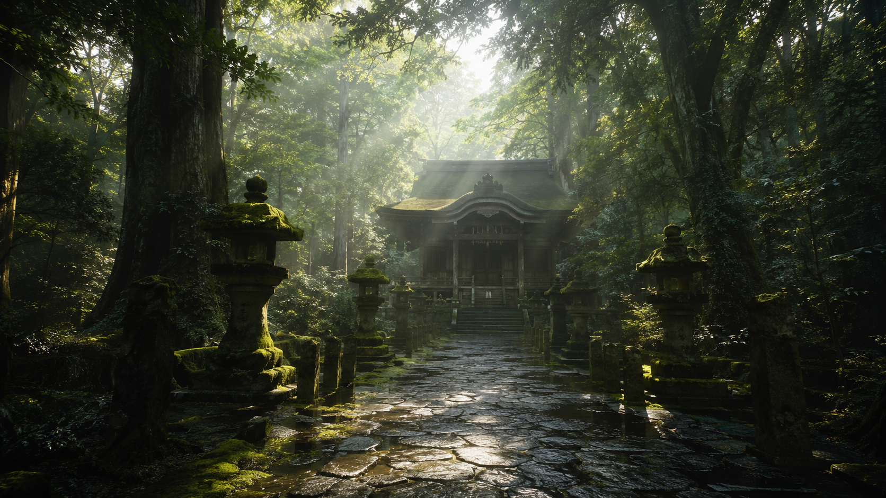

御由緒・御祭神
比良坂神社に伝わる御祭神と、境内の見どころをご紹介いたします。
御祭神
天鏡大御神
てんきょうおおみかみ
比良坂神社の御祭神・天鏡大御神は、その名の通り「鏡」に宿るとされる神です。 古来、鏡は曇りなき心を映すものとされ、訪れる人の迷いを静かに照らすと伝えられています。 ご神木のもとに祀られた御神鏡は、今も杜の光を映し続けています。
御由緒
比良坂神社について
比良坂の杜深くに鎮座する当社は、遠い昔、迷い込んだ旅人が鏡のような泉のほとりで 安らぎを得たという言い伝えに始まると伝えられています。以来、心を落ち着けたい人々が 静かにこの杜を訪れ、御神鏡に己を映して日々の迷いを払ってきました。
境内は今なお深い杉木立に囲まれ、俗世の喧騒から離れた静謐な空気に満ちています。 派手な装いはありませんが、その分だけ、訪れる人の心に寄り添う社であり続けています。
境内の見どころ
境内マップ・見どころ

本殿 ─ 杜の奥に静かに佇む社殿
手水舎
参拝前にはこちらで手と口を清めます。柄杓の水は、心を静める最初の一歩です。